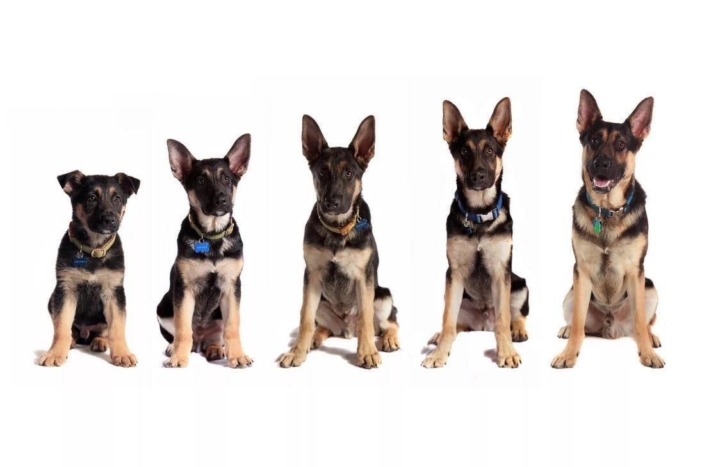

| SoftPow | |
|---|---|
| О нас Животные Популярные бренды Жизненный период Выставки |
Жизненный период животных

1. Детство - это первые несколько месяцев жизни домашнего животного, когда оно
растет и развивается.
2. Юность - это период от нескольких месяцев до нескольких лет, когда животное
становится более активным и игривым.
3. Взрослость - это период от нескольких лет до среднего возраста, когда
животное достигает половой зрелости и может иметь потомство.
4. Старость - это период, когда животное становится менее активным и может
иметь здоровотные проблемы.
5. Пожилой возраст - это последние годы жизни домашнего животного, когда его
здоровье и активность могут ухудшаться.
Собаки
могут жить от 10 до 15 лет, но некоторые породы могут жить до 20 лет.
Кошки
могут жить от 12 до 18 лет, но некоторые могут жить более 20 лет.
Кролики
могут жить от 8 до 12 лет.
Хомяки
могут жить от 2 до 3 лет.
Рыбы
могут жить от нескольких месяцев до нескольких лет, в зависимости от вида и
условий содержания.
Птицы
могут жить от нескольких лет до более чем 20 лет, в зависимости от вида и условий
содержания.
Грызуны
такие как мыши и крысы, обычно живут около 2-3 лет.
Ящерицы и змеи
могут жить от нескольких лет до более чем 20 лет, в зависимости от вида и условий
содержания.
|